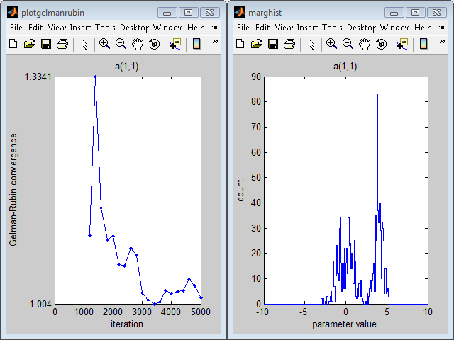

scemua_bimodalmodel
scemua_bimodalmodel
This example covers the optimization of a 1-parameter model 'bimodalmodel'. It uses a population of 1000 samples divided over 5 Markov chains, and keeps drawing new points from the 1-dimensional parameter space as long as the number of function evaluations is below 5000. bimodalmodel's output is a probability, so scemPar.optMethod is set to 'direct probability'. After every fourth generation, some statistical aspects of the optimization are displayed on the screen:
The left-hand plot displays information on the convergence properties of the Markov chains. The right-hand plot displays the marginal probability distribution of the last scemPar.nSamples model evaluations from the array evalResults.